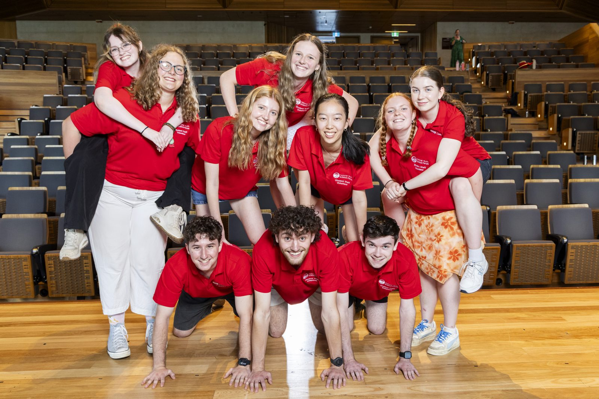
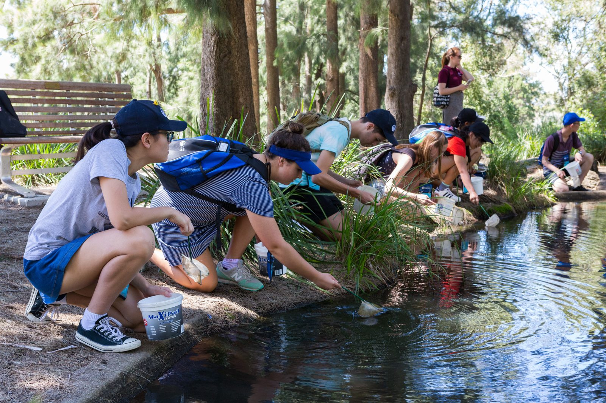
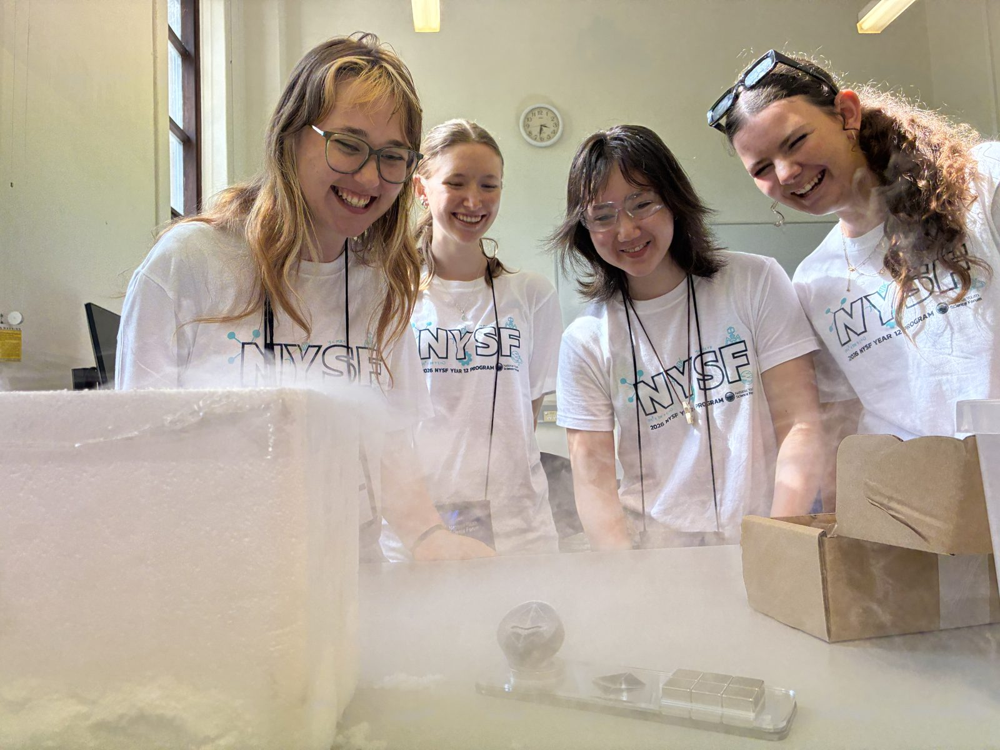
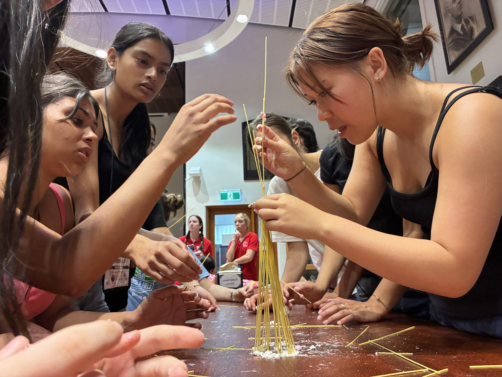
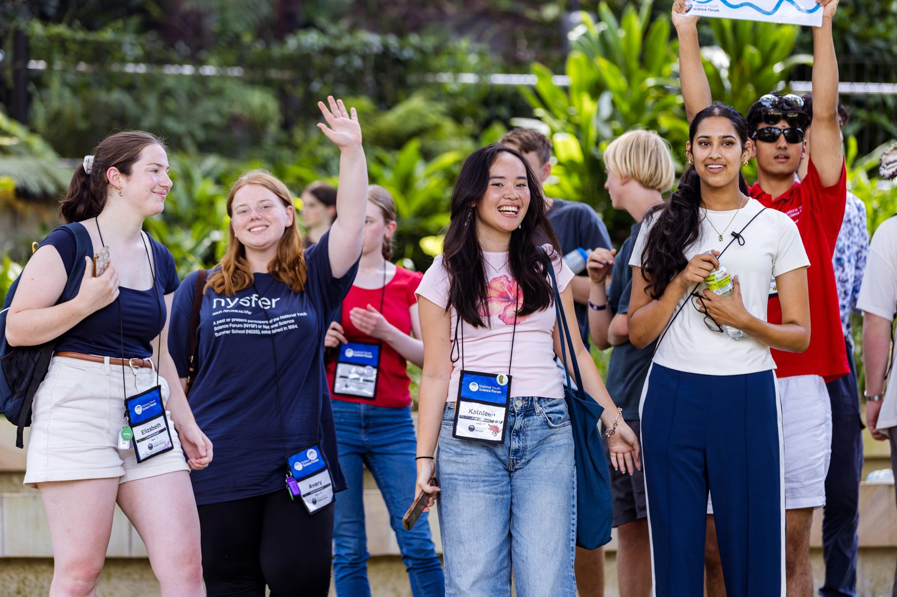
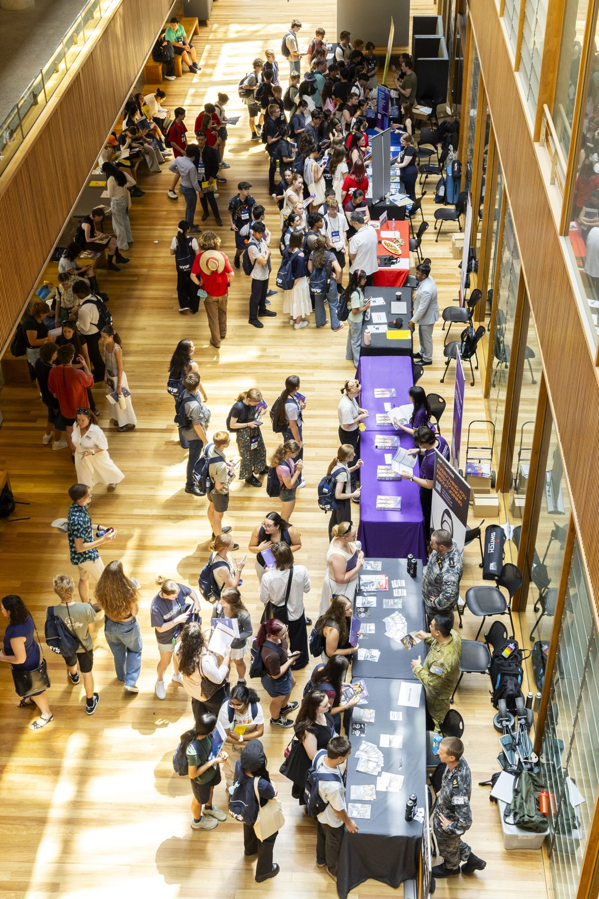
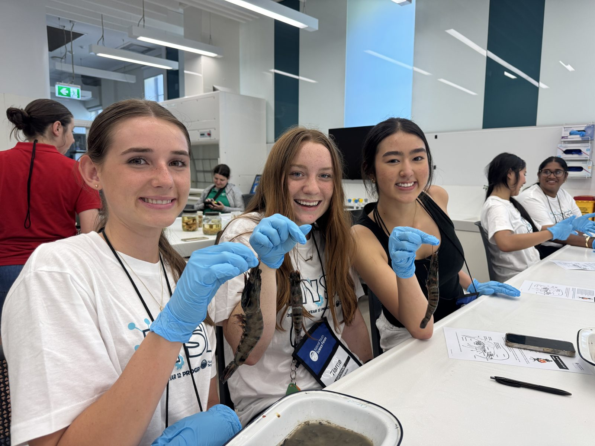

Whether they're exploring future study options, discovering new career pathways or connecting with like-minded peers, NYSF programs give young people the opportunity to build confidence, develop independence and experience STEM beyond the classroom in a supportive environment.

NYSF gives young people the opportunity to explore STEM beyond the classroom, connect with inspiring role models and build lasting friendships with like-minded peers. Along the way, they gain confidence, independence and a clearer understanding of where their interests could take them.
Whatever their year level or interest, there’s a way in.

Nine days living on a uni campus, experiencing STEM in the real world.
Explore →
Non-residential STEM experiences a little closer to home, held throughout the year.
Explore →
Step up as a leader and help run NYSF for the next cohort.
Explore →
Our three-day early-career conference built to equip them with the skills needed to succeed.
Explore →NYSF gave me the confidence that distance or location does not define your ability to do something.
NYSF changed the way I saw myself and what I thought was possible for my future.
I met my best friend at NYSF and she'll be a bridesmaid at my upcoming wedding. My first housemate at uni was a fellow NYSFer. I always felt part of such a great community after NYSF.

Help them back themselves and hit submit.
Scholarships and Rotary can help if the fee is a concern.
Encourage them to get involved, ask questions and embrace every opportunity our programs offer.
Stories, tips and updates from across the network.